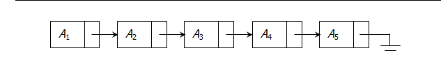
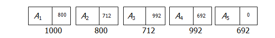
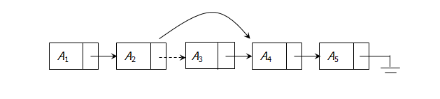
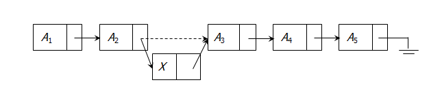

2.1 Abstract Data Types
- An abstract data type (ADT) is a set of operations.
- Abstract data types are mathematical abstractions.
- In an ADT’s definition, there is no mention of how the set of operations is implemented.
- Objects such as lists, sets, and graphs, along with their operations, can be viewed as abstract data types, just as integers, reals, and booleans are data types.
- Integers, reals, and booleans have operations associated with them, and so do ADTs.
- The basic idea is that the implementation of the operations related to ADTs is written once in the program, and any other part of the program that needs to perform an operation on the ADT can do so by calling the appropriate function.
- If for some reason implementation details need to be changed, it should be easy to do so by merely changing the routings that perform the ADT operations.
- There is no rule telling us which operations must be supported for each ADT; this is a design decision.
2.1.1 The List ADT
- The form of a general list: A1, A2, A3, ..., AN.
- The size of this list is N.
- An empty list is a special list of size 0.
- For any list except the empty list, we say that Ai+1 follows or succeeds Ai (i1).
- The first element of the list is A1, and the last element is AN. We will not define the predecessor of A1 or the successor of AN.
- The position of element Ai in a list is i.
2.1.2 Set of operations on the list ADT:
- PrintList
- MakeEmpty
- Find : return the position of the first occurrence of a key
- Insert and Delete : insert and delete some key from some position in the list
- FindKth : return the element in some position
- Next and Previous : take a position as argument and return the position of the successor and predecessor
2.1.3 Simple Array Implementation of Lists
All these functions about lists can be implemented by using an array.
- PrintList
- MakeEmpty
- Find
- Insert
- Delete
- Next
- Previous
2.1.4 Disadvantages
- An estimate of the maximum size of the list is required, even if the array is dynamically allocated.
- Usually this requires a high overestimate, which wastes considerable space.
- Insertion and deletion are expensive. For example, inserting at position 0 requires first pushing the entire array down one spot to make room.
2.1.5 Linked Lists
- Linked list is a data structure which contains list of elements which are not necessarily adjacent in memory.
- Each structure contains the element and a pointer to a structure containing its successor. We call this as the Next pointer.
- The last cell's Next pointer points to NULL.
- Linked lists are used when number of data is not known in prior.

Linked list consists of a chain of elements, in which each element is referred as a node.
A node is a basic building block of a linked list.
A node consists of two parts :
Data : Refers to the information hold by the node
Next : Contains the address of next node in the List

2.1.6 Linked Lists - Operations
To execute PrintList(L) or Find(L, Key), we merely pass a pointer to the first element in the list and then traverse the list by following the Next pointers.
The Delete command can be executed in one pointer change.

The Insert command requires obtaining a new cell from the system by using a malloc call and then executing two pointer modifications

2.1.7 Linked Lists - Issues
- There is no really obvious way to insert at the front of the list from the definitions given.
- Deleting from the front of the list is a special case, because it changes the start of the list; careless coding will lose the list.
- A third problem concerns deletion in general. Although the pointer moves above are simple, the deletion algorithm requires us to keep track of the cell before the one that we want to delete.
2.1.8 Problems with LL & Alternatives
- LL allows traversal of the list in only one direction
- Deleting a node from the list requires keeping track of previous node.
- If the link in any node gets corrupted the remaining nodes of the list becomes inaccessible and unusable.
- Alternatives : Doubly Linked List, Circular Linked List.